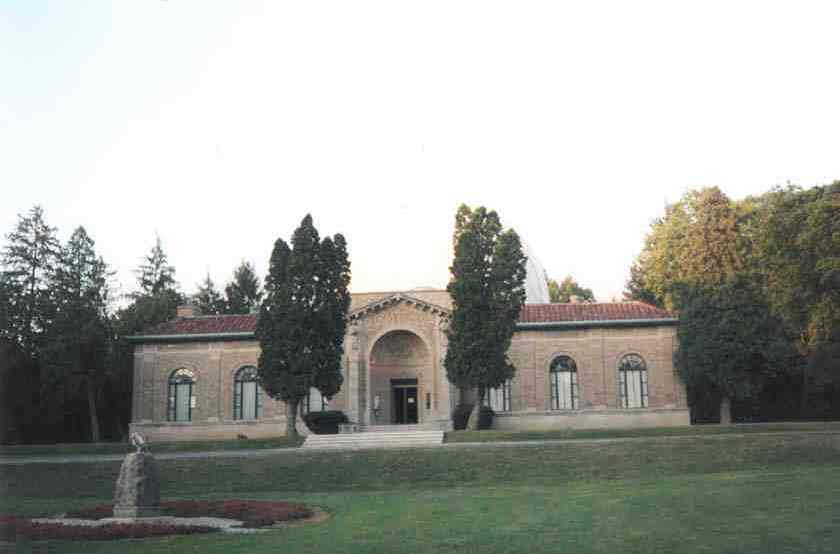

Perkins Observatory

OSU and Ohio Wesleyan's Perkins Observatory, located north of Columbus in Delaware County, just off Route 23, is haunted by its namesake, Hiram Perkins, OSU math professor and pig farmer.
Back
Sources
Smith, Robin. Columbus Ghosts II. Worthington, OH: Emuses, Inc., 2003. pp. 73-76.